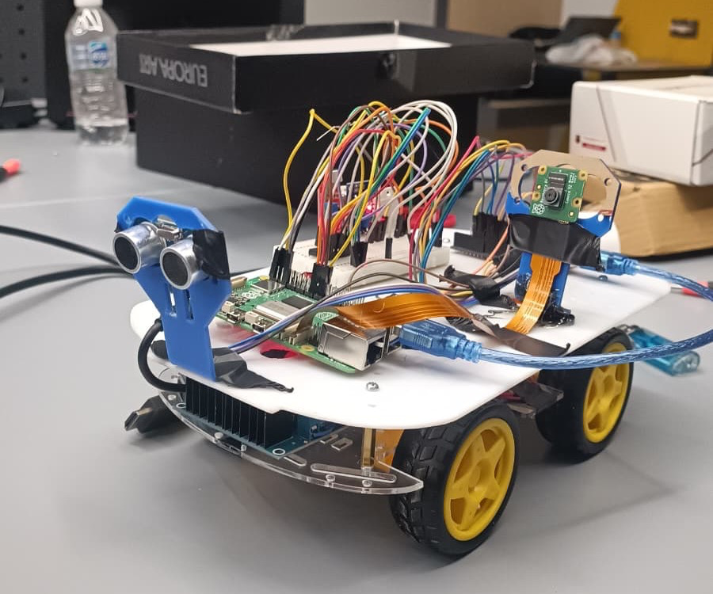
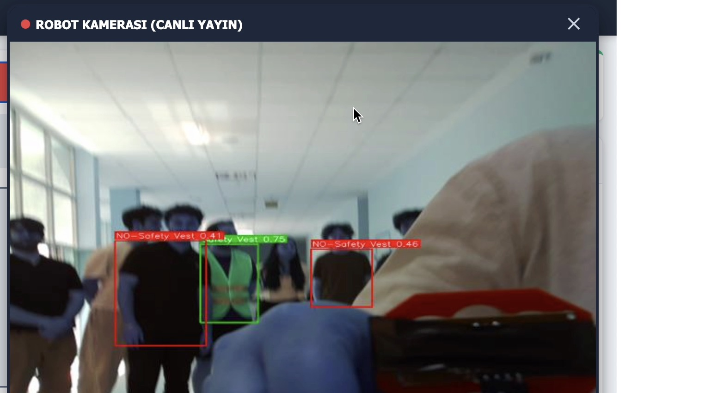
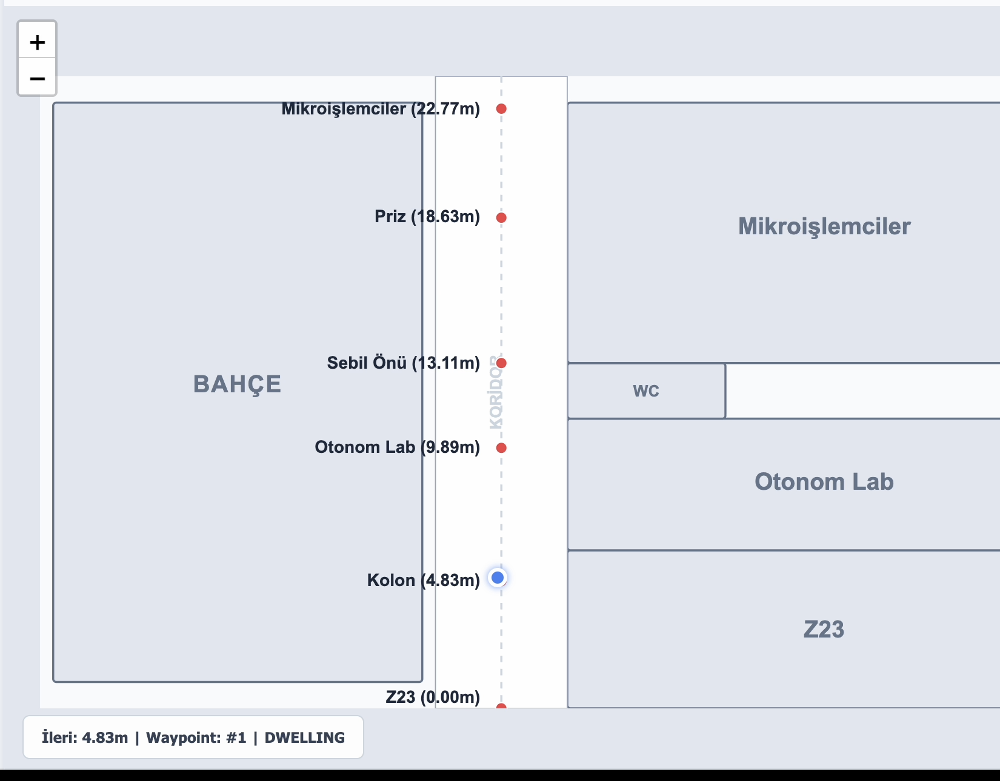
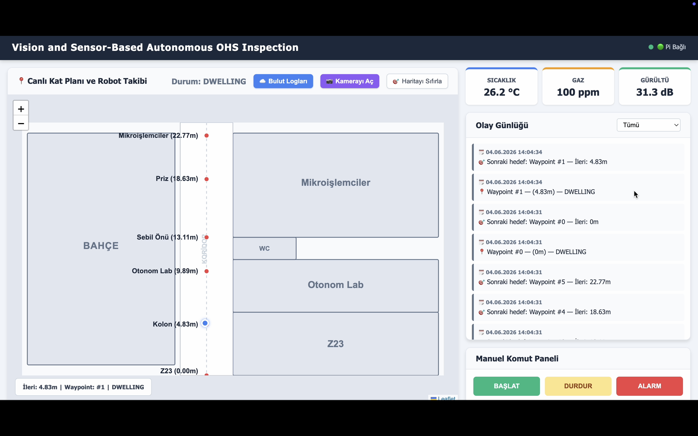
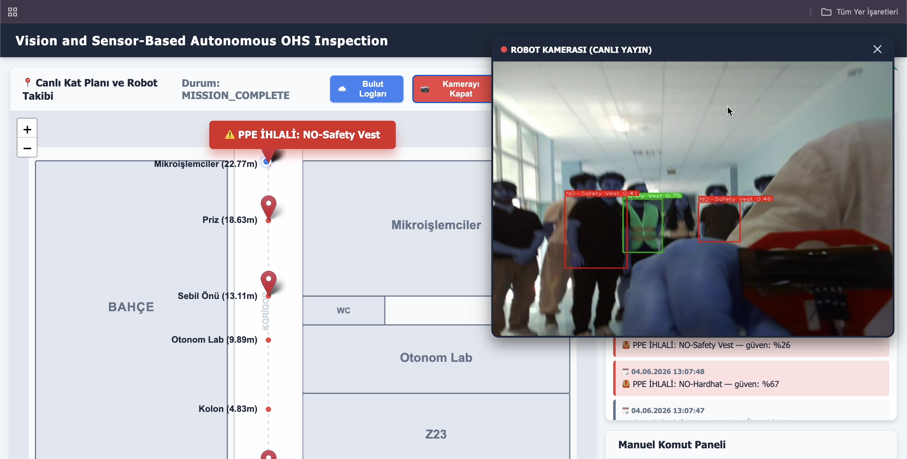
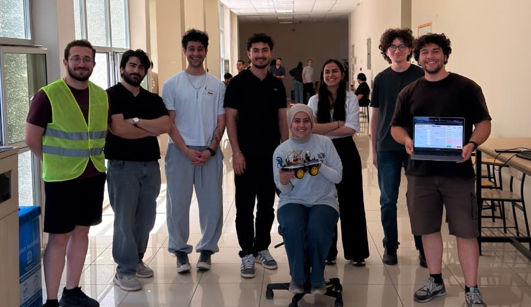

University robotics project • edge AI safety automation
Autonomous Safety. Continuous Protection.
An AI-powered mobile inspection robot that detects PPE violations, monitors environmental hazards and reports safety incidents in real time.
Raspberry Pi 5
YOLOv8n
FastAPI
MQTT
Edge AI Active
Local Patrol Mode

OHS Sentinel
Autonomous patrol robot concept
Camera Stream
MQTT Events
Waypoint Patrol
Why it matters
Traditional Safety Inspections Leave Critical Blind Spots
Inconsistent Coverage
Human inspectors cannot continuously monitor every area.
Delayed Detection
Many violations are discovered only after an accident occurs.
Environmental Risk
Dangerous gas, heat and noise zones may be unsafe for human inspection.
Fragmented Systems
Camera monitoring and environmental sensing are often managed separately.
Industrial Risk Map
Live blind-spot analysis

Potential blind spots, heat zones and collision corridors
How it works
One Autonomous Platform. Multiple Layers of Protection.
Patrol
Robot follows predefined waypoints.
Observe
Camera scans workers and the surrounding environment.
Detect
YOLOv8n identifies missing PPE while sensors check environmental conditions.
Localize
Each detected event is associated with the current waypoint.
Notify
The event is sent to the dashboard through MQTT and WebSocket.
Respond
Operators receive alerts and can start, stop or trigger the alarm.
Robot video
See OHS Sentinel in Action
Watch the robot patrol a test environment, detect safety risks and transmit live events to the monitoring dashboard.
Autonomous Patrol
Waypoint navigation keeps inspections repeatable and consistent.
PPE Violation Detection
Edge vision flags missing protective equipment without cloud dependency.
Real-Time Dashboard Alerts
Events flow instantly into the monitoring interface for operator response.
Core capabilities
Five Integrated Modules
Module 01
Vision-Based PPE Detection
Processes live camera frames with YOLOv8n to detect missing hard hats, safety vests and protective goggles.
Module 02
Environmental Hazard Sensing
Continuously monitors temperature, humidity, gas concentration and ambient noise using an onboard sensor array.
Module 03
Autonomous Navigation
Follows predefined waypoint routes and uses ultrasonic sensors to stop when an obstacle is detected.
Module 04
Backend and REST API
Collects robot events through MQTT, stores them in SQLite and distributes live updates through REST and WebSocket services.
Module 05
OHS Monitoring Dashboard
Visualizes incidents, sensor values and robot locations while allowing operators to send START, STOP and ALARM commands.
Computer vision
Computer Vision That Never Looks Away

Local inference on Raspberry Pi
Runs at the edge for fast on-device inspection.
No continuous cloud connection required
Designed to keep working in isolated industrial spaces.
Structured JSON violation events
Creates machine-readable records for the dashboard and logs.
Confidence score and bounding-box output
Provides transparent detection output for review and traceability.
Designed for low-latency edge detection
Optimized for practical inspection scenarios rather than cloud delay.
Environmental sensing
Beyond Vision: Environmental Risk Detection
All gauge values below are demo values for the frontend simulation only.
Temperature
Demo
28
°C
Warning target: over 60 °C
Humidity
Demo
47
%
Reference operating band: comfortable industrial range
Gas / Air Quality
Demo
220
ppm
Warning target: over 400 ppm
Noise Level
Demo
62
dB
Warning target: over 85 dB
Frontend demo only. Press the button to simulate an environmental incident and watch the gas gauge react.
Recent Event Stream
Demo log
Operator console
Real-Time Command and Monitoring Dashboard
Facility Map
Mock Leaflet-style overview
Loading Bay
Assembly Line
Restricted Area
1
2
3
4
5
PPE
Hazard
Implemented system
Screenshots from the working OHS Sentinel dashboard: the live floor plan with robot tracking, temperature/gas/noise gauges, the event log and the robot's live camera feed with PPE detection.


System design
Built as a Complete Edge Safety Ecosystem
Vision flow
Pi Camera
YOLOv8n PPE Detection
MQTT Broker
FastAPI Backend
SQLite + WebSocket
OHS Monitoring Dashboard
Sensor flow
DHT22 / MQ-135 / KY-038
Environmental Sensor Module
MQTT Broker
Navigation flow
Waypoint Navigation
USB Serial
Arduino UNO
L298N Motor Driver
4 DC Motors
Command flow
Dashboard START / STOP / ALARM
FastAPI / MQTT
Navigation Module
Arduino UNO
MQTT
USB Serial
REST
WebSocket
GPIO / SPI
Technical snapshot
Technical Specifications
CategorySpecification
Main ComputerRaspberry Pi 5, 8 GB
CameraRaspberry Pi Camera Module v2
AI ModelYOLOv8n
MicrocontrollerArduino UNO R3
Motor DriverL298N Dual H-Bridge
Mobility4WD Robot Chassis
Obstacle Detection2× HC-SR04
Temperature/HumidityDHT22
Gas/Air QualityMQ-135 + MCP3008
Noise DetectionKY-038
CommunicationMQTT, REST, WebSocket, USB Serial
BackendPython, FastAPI
DatabaseSQLite
DashboardBrowser-Based Monitoring Interface
Power7.4 V 2S2P Li-ion Battery Pack
Remote ManagementSSH and systemd
Project goals
Engineering Targets
Targets below are intended goals for the project, not claimed achieved results.
Project team
Built by a Cross-Disciplinary Robotics Stack

Melik Ahmet Caymazoğlu
Vision Based PPE Detection
Mert Certel
Vision Based PPE Detection
Zehra Betül Güzel
Environmental Hazard Sensing
Ahmet Faruk Kemal Keskinsoy
Autonomous Navigation
Muhammed Emin Merdun
Autonomous Navigation
Ömer Faruk Semih
Backend & API
Yusuf Eren Nalbant
Backend & API
İrem Akşun
OHS Monitoring Dashboard